|
Blog
The Blog Module in MyForum represents a web-based publishing facility which enables designated MyForum users to publish articles, newsletters, ideas, informal journals of their thoughts, comments & philosophies and is intended for general consumption by the MyForum community.
a. Click on "Blog" link on the top panel of the screen
b. The "Blog" main page is divided into 4 sections:
* Top menu (Blog Home, About Us, Archive)
* Announcement
* Post List (Features Post, Latest Posts, and Previous Features Post)
* Right menu (Blogs, Recent Entries)
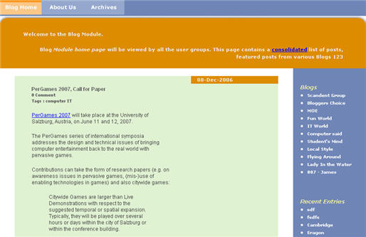
1. Blog Visitor
1.1. Read Blog Entry
a. Select a blog from right menu of the "Blog Home" page.
b. The individual blog home page will be displayed. It will list recent entries from the blog.
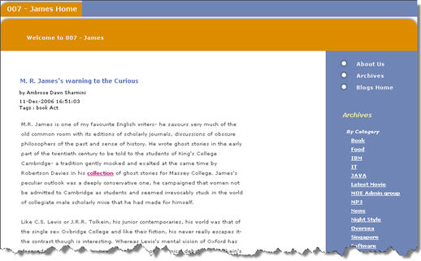
c. Click on "Read More" link to open the blog post.
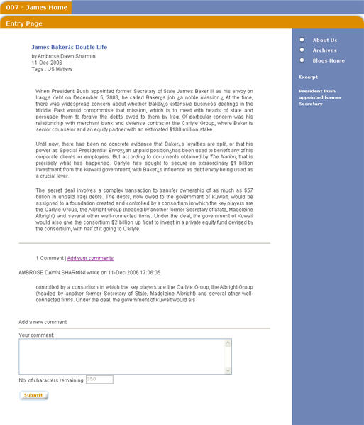
User can also open blog posts from anywhere blog post is listed by clicking on the "Read More" link at the bottom part of the post.
1.2. Post Comments for a Blog Entry
a. Open a blog entry. If the blog entry is set to accept comments, "Add a new comment" section will be displayed at the bottom of the post.
b. Enter comment and click on "Submit" button to submit the comment.
2. Blog Author
As an author of a blog, the user will have access to blog admin section, from which user will be able to post / edit entries and create new categories.
a. From the "Blog Home", click on a blog (for which user is the author). If user is the author of the blog, "Blog Admin" link will be displayed on the right menu.
b. Click on the "Blog Admin" link to access the blog administration functions.
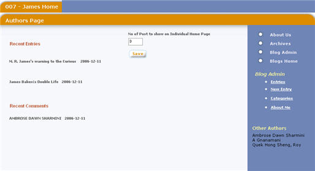
2.1. Create New Entry
a. Click on the "New Entry" link on the right menu.
b. The "Create New Entry" page will be displayed.
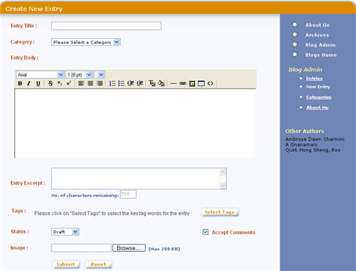
c. Enter entry details and click on "Submit" button.
2.2. Edit / Modify an Entry
a. Click on the "Entries" link on the right menu.
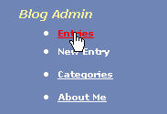
b. The "List of Entries" page will be displayed.
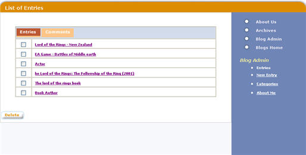
c. Click on the entry title. The "Edit Entry" page will be displayed.
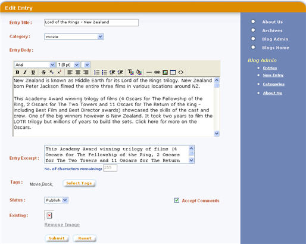
d. Edit the entry and click on "Submit" button to save the changes.
2.3. Delete an Entry
a. From the "List of Entries" page, select the entries to be deleted.
b. Click on "Delete" button to delete the selected entries.
2.4. Delete a Comment
a. From the "List of Entries" page, select the "Comments" tab. The "List of Comments" screen will be displayed listing comments for each of the blog entry
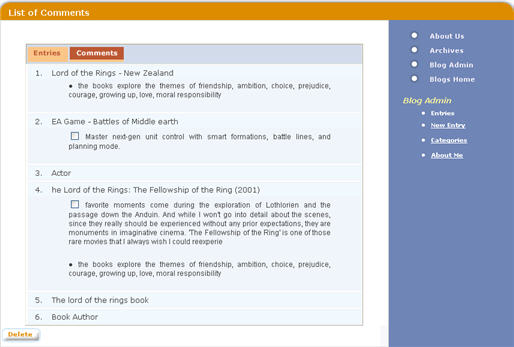
b. Select comments to be deleted, and click on "Delete" button to delete the selected comments
2.5. Create New Category
a. Click on the "Categories" link from the right menu.
b. The "Create Category" page will be displayed with the section to create new category on top and list of available categories below.
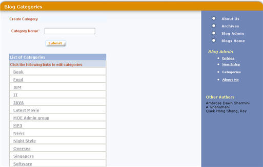
c. Enter new category name and click on "Submit" button.
2.6. Edit a Category
a. From the "Create Category" page, click on a category name from the "List of Categories" section.
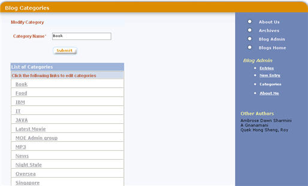
b. The screen will change to "Modify Category" page. Change the category name, and click on "Submit" button.
|